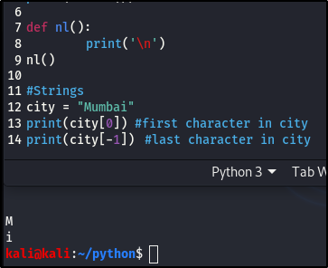

Advanced strings.
Most of the things we'll look at in this section,aren't things we're going to use inthis course but I still am all for the basics, and it's also important to be able to unand the syntax, if or when you come accross them.

This should be familiar to you from the list post, I hope it is.
If we had asentence and wantes to print out the first word init, we would have to know the number of characters in that word and then put in the range of nmber within the brackets.
Like this:

If you count, it's actually 3:6 but remember, it cuts off before the inputed number, so we go one number up.
We can also do a split, which in my case will be, print(sent.split()). The split happens based on a dilimeter ( which we covered in the Bash scripting post), which is a space.
print(sent.split()) - since the parenthesis is empty, means that everytime there's a space, split. Let's see how that looks:

You can see that it breaks the sentence out into individual words, based on a dilimeter (space). We've succeded in splitting the sentence, now let's see how to join the words back together into a sentence.
So we can split or join a sentence by dilimeters

One of the omst important thiing in this section is, what happens if our sentence has a quote, or it's a qoute?
If you remember in the explanation of strings, in Python (Part 1), I explained that strings can be place in single or double quotation marks. So in an instance where you have a quote as a sentence or in a sentence, we can use either double quotation to show it's a string and single for the quote or single quotations for the string and double for the quote.

In a case where you're insistent on using the double quotation marks for your quote, you can use the escape character, the back slash (\), at the beginning ann the end of your quote. It's used to ignore characters that you don't want to be regarded as errors, in our case, it treats it as a string and not a quotation mark at the end of a string.

You are going to encouter charaxcter escaping as you go along in your career, so please make sure you practice.
Another feature is the .stip, which takes away too much space between characters. Here's an example of how that works:

Case sensitivity.

In the above image, we want to know if the letter "A" is in the word "Water" and if you notice, it's case sensitive. But in a case where, we don't know if the letter inthe word is capitalized or not, we can just make both the letter and the word the same case, as shown above with .;lower. In this case, it just searches for the word withot any case sensitivity.
This will come in handy in case where you're looking for specific items or key phrases. When searching for specifics, it's advisable to put all of it in lower case, so it gives returns the accurate result, without case sensitivity.
One last thing we're going to look at is a format.
In the first Python post, in strings, we talked about concatenation. Format is

Overview- Zero (0) is the first number, when we're lookingat variables, lists, strings. Always start with a zero.
- There are different kinds of methods we can use with sentence. E.g, .strip, .lower, .split, etc.
- When you're looking into improving your code, do your reaserch and the best place to start is Google.
- There are better waysto put strings together, instead of concatenation, use format.
- The syntax when it comes to escaping quotes in a string.
Next we'll be moving onto Dictionaries and Sockets.
Until next time, Keep Learning. Keep Hacking. And don't forget to breathe